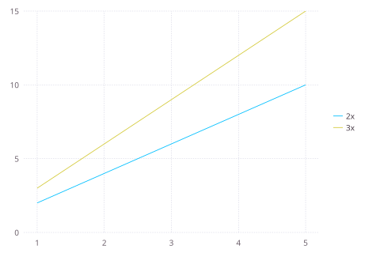
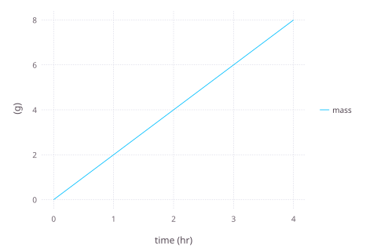
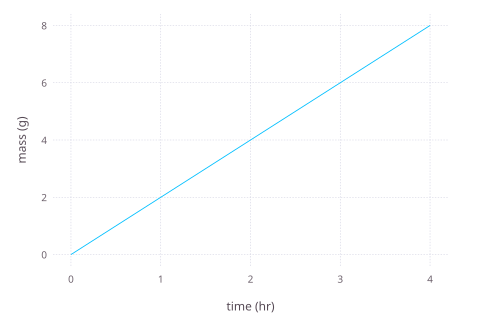
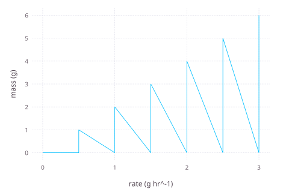

Inspect and Visualize Models
Inspection should come before editing configuration or selecting output. Cropbox provides complementary views of a model type, an instance, and simulation data.
List parameters
using Cropbox
@system InspectDemo(Controller) begin
rate: growth_rate => 2 ~ preserve(parameter, u"g/hr")
mass(rate) ~ accumulate(u"g")
end
parameters(InspectDemo)Config for 1 system:
| InspectDemo | ||
| rate | = | 2 g hr^-1 |
Useful options are:
alias=true: show aliases rather than short names;recursive=true: include parameters in nested systems;exclude=(...): omit infrastructure or already visited systems;scope=module: choose where defaults are evaluated when inspecting a type.
For an instance, parameters(s) reports current values rather than declaration defaults.
Inspect declarations and values
look(InspectDemo)
look(InspectDemo, :mass)[doc]
[system]
InspectDemo
context
config
rate (growth_rate)
mass[doc]
[code]
mass(rate) ~ accumulate(u"g")On an instance, look also displays the current value.
s = instance(InspectDemo)
look(s, :mass)[doc]
[code]
mass(rate) ~ accumulate(u"g")
[value]
0.0 gThe macro form avoids quoting a variable name:
@look InspectDemo.mass[doc]
[code]
mass(rate) ~ accumulate(u"g")@look s.f(x) has another meaning: it evaluates a function-like Cropbox variable. Use the function form look(s, :f) when the goal is declaration inspection.
Inspect dependency relationships
look is the stable declaration view. Two qualified structural helpers expose complementary graphs:
d = Cropbox.dependency(InspectDemo)
-->
<!-- Pages: 1 -->
<svg width="406pt" height="171pt"
viewBox="0.00 0.00 406.00 171.00" xmlns="http://www.w3.org/2000/svg" xmlns:xlink="http://www.w3.org/1999/xlink">
<g id="graph0" class="graph" transform="scale(1 1) rotate(0) translate(4 167.42)">
<polygon fill="white" stroke="none" points="-4,4 -4,-167.42 401.69,-167.42 401.69,4 -4,4"/>
<!-- 1 -->
<g id="node1" class="node">
<title>1</title>
<text xml:space="preserve" text-anchor="middle" x="115.69" y="-123.08" font-family="Courier,monospace" font-size="9.00">∘context</text>
</g>
<!-- 2 -->
<g id="node2" class="node">
<title>2</title>
<text xml:space="preserve" text-anchor="middle" x="78.69" y="-93.08" font-family="Courier,monospace" font-size="9.00">context</text>
</g>
<!-- 1&%2345;>2 -->
<g id="edge1" class="edge">
<title>1&%2345;>2</title>
<path fill="none" stroke="black" stroke-width="0.2" d="M106.74,-118.22C101.46,-114.23 94.77,-109.17 89.24,-104.98"/>
<polygon fill="black" stroke="black" stroke-width="0.2" points="89.83,-104.55 87.81,-103.9 88.98,-105.66 89.83,-104.55"/>
</g>
<!-- 3 -->
<g id="node3" class="node">
<title>3</title>
<text xml:space="preserve" text-anchor="middle" x="99.69" y="-5.08" font-family="Courier,monospace" font-size="9.00">⋆context</text>
</g>
<!-- 2&%2345;>3 -->
<g id="edge2" class="edge">
<title>2&%2345;>3</title>
<path fill="none" stroke="black" stroke-width="0.2" d="M58.38,-94.28C44.18,-92.59 26.14,-87.8 16.69,-74.78 12.63,-69.18 13.56,-65.39 16.69,-59.22 28.14,-36.66 54.71,-23.29 74.73,-16.09"/>
<polygon fill="black" stroke="black" stroke-width="0.2" points="74.71,-16.84 76.36,-15.51 74.24,-15.52 74.71,-16.84"/>
</g>
<!-- 6 -->
<g id="node6" class="node">
<title>6</title>
<text xml:space="preserve" text-anchor="middle" x="38.69" y="-64.08" font-family="Courier,monospace" font-size="9.00">mass</text>
</g>
<!-- 2&%2345;>6 -->
<g id="edge3" class="edge">
<title>2&%2345;>6</title>
<path fill="none" stroke="black" stroke-width="0.2" d="M69.01,-88.46C63.39,-84.67 56.28,-79.87 50.36,-75.88"/>
<polygon fill="black" stroke="black" stroke-width="0.2" points="50.87,-75.37 48.82,-74.83 50.08,-76.53 50.87,-75.37"/>
</g>
<!-- 7 -->
<g id="node7" class="node">
<title>7</title>
<text xml:space="preserve" text-anchor="middle" x="167.69" y="-34.08" font-family="Courier,monospace" font-size="9.00">⋆mass</text>
</g>
<!-- 2&%2345;>7 -->
<g id="edge4" class="edge">
<title>2&%2345;>7</title>
<path fill="none" stroke="black" stroke-width="0.2" d="M89.25,-88.24C105.85,-77.61 137.94,-57.05 155.5,-45.81"/>
<polygon fill="black" stroke="black" stroke-width="0.2" points="155.59,-46.59 156.89,-44.92 154.83,-45.41 155.59,-46.59"/>
</g>
<!-- 4 -->
<g id="node4" class="node">
<title>4</title>
<text xml:space="preserve" text-anchor="middle" x="271.69" y="-153.07" font-family="Courier,monospace" font-size="9.00">config</text>
</g>
<!-- 4&%2345;>1 -->
<g id="edge5" class="edge">
<title>4&%2345;>1</title>
<path fill="none" stroke="black" stroke-width="0.2" d="M253.8,-151.79C226.05,-146.81 172.56,-137.21 140.91,-131.53"/>
<polygon fill="black" stroke="black" stroke-width="0.2" points="141.06,-130.84 138.97,-131.18 140.82,-132.22 141.06,-130.84"/>
</g>
<!-- 4&%2345;>3 -->
<g id="edge6" class="edge">
<title>4&%2345;>3</title>
<path fill="none" stroke="black" stroke-width="0.2" d="M289.48,-154.7C324.21,-153.08 397.69,-144.08 397.69,-97 397.69,-97 397.69,-97 397.69,-66 397.69,-10.58 196.35,-7.76 124.66,-8.51"/>
<polygon fill="black" stroke="black" stroke-width="0.2" points="124.88,-7.8 122.88,-8.53 124.89,-9.2 124.88,-7.8"/>
</g>
<!-- 5 -->
<g id="node5" class="node">
<title>5</title>
<text xml:space="preserve" text-anchor="middle" x="271.69" y="-93.08" font-family="Courier,monospace" font-size="9.00">rate</text>
</g>
<!-- 4&%2345;>5 -->
<g id="edge7" class="edge">
<title>4&%2345;>5</title>
<path fill="none" stroke="black" stroke-width="0.2" d="M271.69,-148.35C271.69,-137.86 271.69,-117.47 271.69,-105.79"/>
<polygon fill="black" stroke="black" stroke-width="0.2" points="272.39,-105.88 271.69,-103.88 270.99,-105.88 272.39,-105.88"/>
</g>
<!-- 5&%2345;>7 -->
<g id="edge8" class="edge">
<title>5&%2345;>7</title>
<path fill="none" stroke="black" stroke-width="0.2" d="M259.35,-88.24C239.96,-77.61 202.46,-57.05 181.95,-45.81"/>
<polygon fill="black" stroke="black" stroke-width="0.2" points="182.37,-45.25 180.28,-44.9 181.7,-46.47 182.37,-45.25"/>
</g>
<!-- 6&%2345;>3 -->
<g id="edge9" class="edge">
<title>6&%2345;>3</title>
<path fill="none" stroke="black" stroke-width="0.2" d="M45.69,-59.46C57,-48.9 79.24,-28.11 91.35,-16.79"/>
<polygon fill="black" stroke="black" stroke-width="0.2" points="91.57,-17.55 92.56,-15.67 90.62,-16.52 91.57,-17.55"/>
</g>
<!-- 6&%2345;>7 -->
<g id="edge10" class="edge">
<title>6&%2345;>7</title>
<path fill="none" stroke="black" stroke-width="0.2" d="M51.06,-63.32C74.25,-58.28 124.28,-47.42 150.64,-41.7"/>
<polygon fill="black" stroke="black" stroke-width="0.2" points="150.7,-42.4 152.51,-41.3 150.41,-41.04 150.7,-42.4"/>
</g>
<!-- 7&%2345;>3 -->
<g id="edge11" class="edge">
<title>7&%2345;>3</title>
<path fill="none" stroke="black" stroke-width="0.2" d="M152.6,-30.01C142.62,-26.05 129.46,-20.82 118.76,-16.57"/>
<polygon fill="black" stroke="black" stroke-width="0.2" points="119.05,-15.93 116.94,-15.85 118.54,-17.24 119.05,-15.93"/>
</g>
</g>
</svg>
)
h = Cropbox.hierarchy(InspectDemo; skipcontext = true)
-->
<!-- Pages: 1 -->
<svg width="98pt" height="53pt"
viewBox="0.00 0.00 98.00 53.00" xmlns="http://www.w3.org/2000/svg" xmlns:xlink="http://www.w3.org/1999/xlink">
<g id="graph0" class="graph" transform="scale(1 1) rotate(0) translate(4 49.14)">
<polygon fill="white" stroke="none" points="-4,4 -4,-49.14 94.28,-49.14 94.28,4 -4,4"/>
<!-- 1 -->
<g id="node1" class="node">
<title>1</title>
<text xml:space="preserve" text-anchor="middle" x="45.14" y="-5.08" font-family="Courier,monospace" font-size="9.00">InspectDemo</text>
</g>
<!-- 2 -->
<g id="node2" class="node">
<title>2</title>
<text xml:space="preserve" text-anchor="middle" x="45.14" y="-34.08" font-family="Courier,monospace" font-size="9.00">Controller</text>
</g>
<!-- 2&%2345;>1 -->
<g id="edge1" class="edge">
<title>2&%2345;>1</title>
<path fill="none" stroke="black" stroke-width="0.2" stroke-dasharray="5,2" d="M45.14,-29.46C45.14,-25.88 45.14,-21.4 45.14,-17.54"/>
<polygon fill="black" stroke="black" stroke-width="0.2" points="45.84,-17.78 45.14,-15.78 44.44,-17.78 45.84,-17.78"/>
</g>
</g>
</svg>
)
dependency follows variables and generated update stages; it is useful for checking evaluation order and cycles. hierarchy follows mixins and child systems; dashed edges denote mixins. Cropbox uses its bundled Graphviz executable to render either graph as SVG on supported platforms. A static copy can be written for documentation:
Cropbox.writeimage("dependency", d; format = :svg)
Cropbox.writeimage("hierarchy", h; format = :svg)Download the generated dependency graph or hierarchy graph.


The text representation remains available without invoking Graphviz.
These helpers are qualified because their graph representation is implementation-oriented rather than a stable serialization format. Explain the scientific relationships in the surrounding text instead of asking readers to infer model meaning from every generated stage.
Navigate an instance
dive(s) opens a terminal menu for walking through nested systems and values. It is not interactive in Jupyter; there it falls back to a simpler display. Use look, property access, or explicit output paths in notebooks.
Read values in Julia code
s.rate'
value(s.mass)0.0 gPostfix ' is concise for interactive work. value(...) is clearer in helper functions. Do not assume a system field is a bare number.
Visualize an existing result
visualize works directly with vectors, and visualize! adds another series to the same result:
x = collect(1:5)
p = visualize(x, 2 .* x; kind = :line, name = "2x", ylim = (0, 15))
visualize!(p, x, 3 .* x; kind = :line, name = "3x")
The explicit range reserves space for both curves, including on a fixed-size terminal canvas.
This form is useful for calculated curves that do not require a simulation. For model output, retain the DataFrame and name its columns explicitly.
r = simulate(InspectDemo; stop = 4u"hr", target = :mass)
visualize(r, :time, :mass; kind = :line)
The same function accepts vectors or DataFrames and can also run a system itself.
visualize(InspectDemo, :time, :mass;
stop = 4u"hr",
kind = :line,
)
Interactively explore parameters
In JupyterLab or Notebook with jupyter-server-proxy, manipulate adds widgets that update a visualization as parameter values change.
manipulate(InspectDemo, :time, :mass;
parameters = InspectDemo => (
rate = 0:0.5:3,
),
stop = 4u"hr",
kind = :line,
)Use interaction to explore sensitivity and plausible ranges. For reproducible analysis, record explicit configurations and run them with simulate; an interactive widget is not a substitute for a saved experiment design.
Plot a parameter response
For a model with a configurable input, xstep creates the configurations needed for a response curve.
visualize(InspectDemo, :rate, :mass;
xstep = InspectDemo => :rate => 0:0.5:3,
stop = 2u"hr",
kind = :line,
)
Use group for separate series and two input ranges for a heatmap. For analysis beyond quick exploration, construct configurations explicitly with @config, call simulate, and retain the resulting DataFrame.
Compare observations and estimates
visualize(obs, Model, ...) overlays observations and model output, while visualize(obs, Model, target; index=...) can produce an observation-versus- estimate plot. See Evaluate and Calibrate Models for a complete workflow.